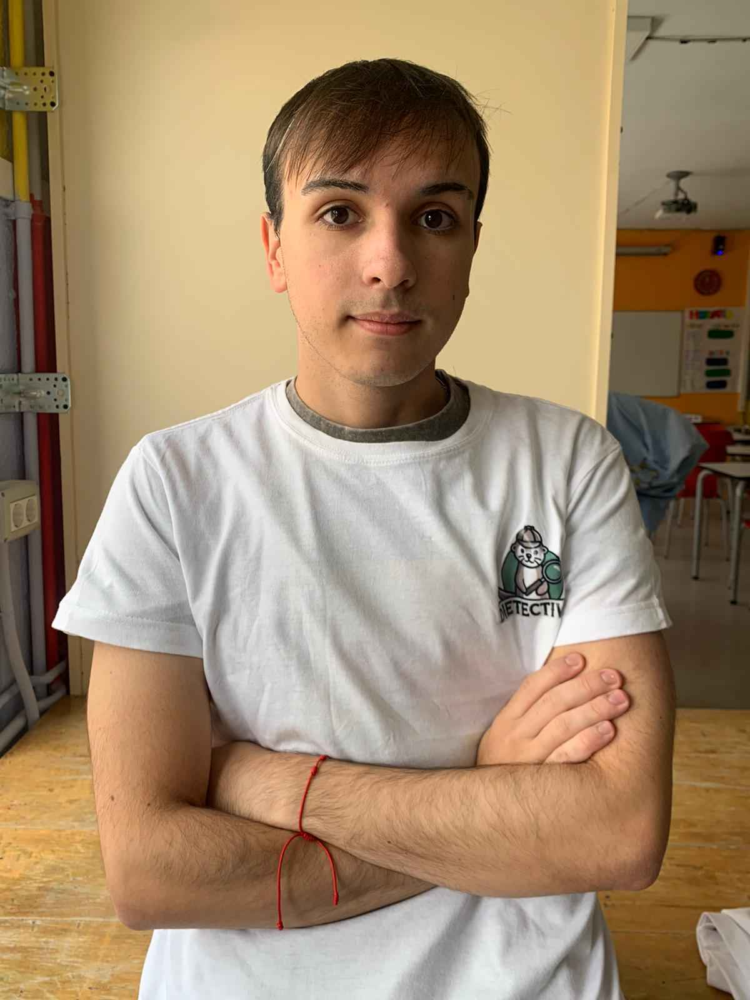
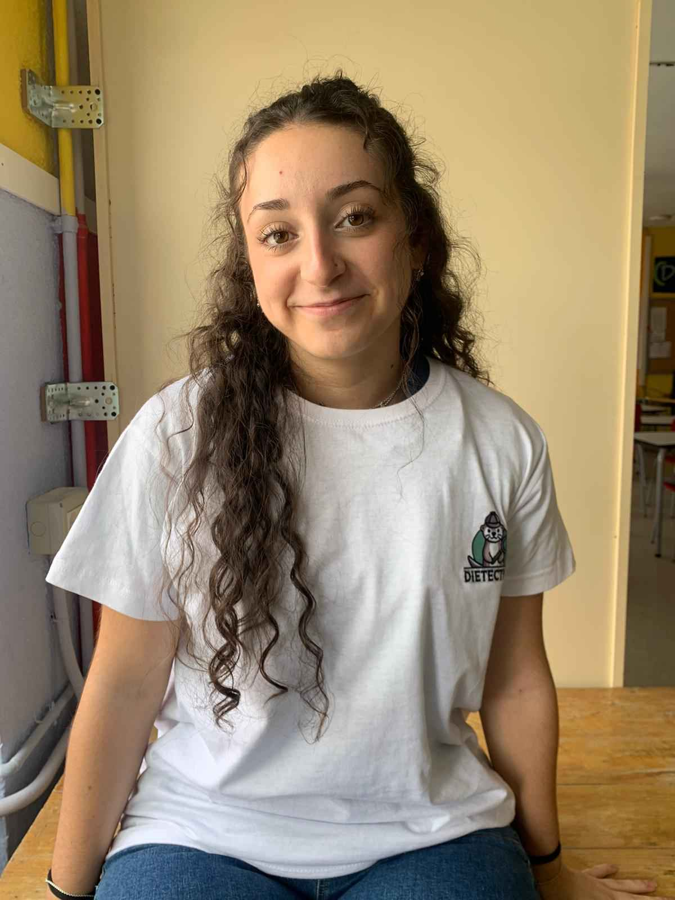
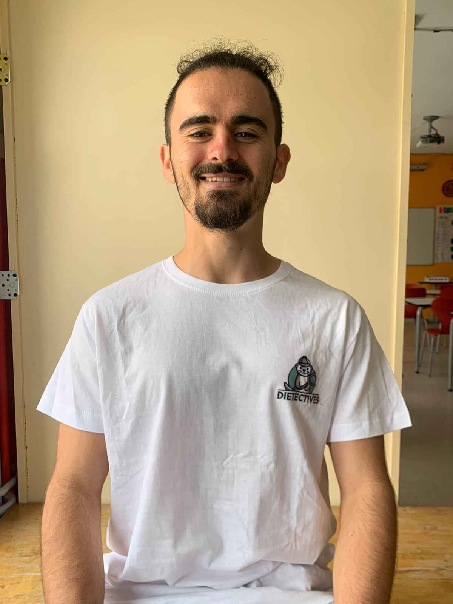
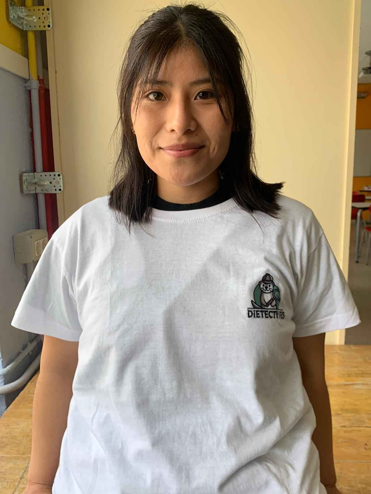
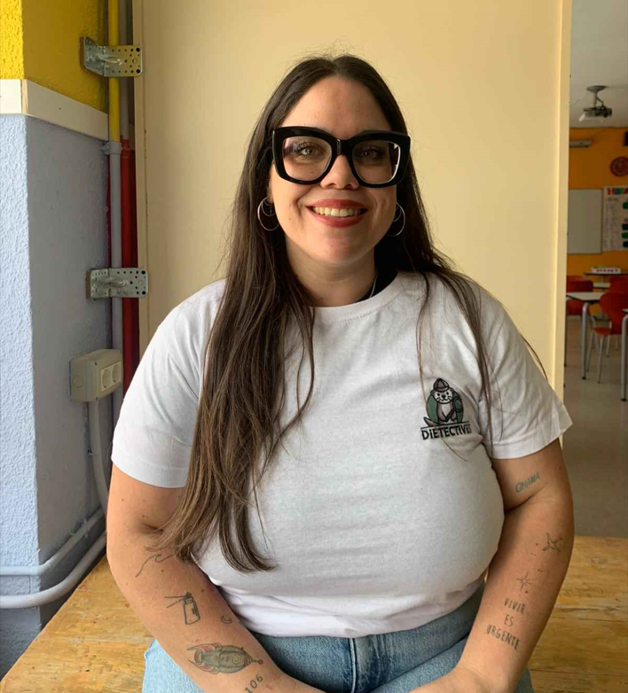

Conócenos
Somos Aarón, Gonzalo, Irene, Juan Carlos, Natalia y Olga, estudiantes de 2° de Dietética en el IES Leonardo Da Vinci de la Comunidad de Madrid.
Nos apasiona el mundo de la nutrición y el deporte. En este grado estamos aprendiendo sobre:
- Alimentación equilibrada y sostenible con el medio ambiente.
- Cómo la dietoterapia puede ayudar a prevenir patologías crónicas y enfermedades metabólicas.
- Legislación alimentaria, seguridad e higiene de los alimentos.
- Fomento de hábitos saludables.
- ¡Y por supuesto, a hacer dietas!
¡Bienvenidxs!

Aarón
Profesional en la mejora de la salud cuidando la alimentaci√≥n üçé

Gonzalo
Una opci√≥n fresca y nutritiva para cualquier ocasi√≥n ü•ó

Irene
Promotora del bienestar en cada plato üå±

Juan Carlos
Investigador de hábitos saludables üîçüßê

Natalia
Defensora de la nutrici√≥n a trav√©s de superalimentos üõ°Ô∏èü•ô

Olga
Experta en recetas virales üë©ü誂Äçüç≥